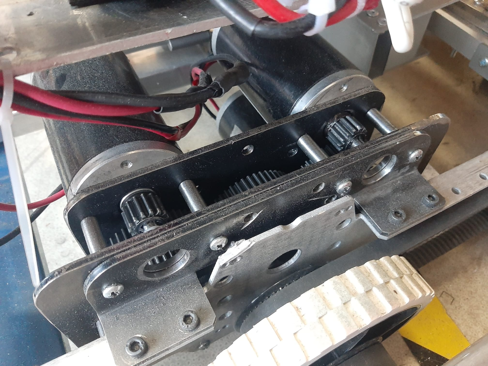

Callister Custom Gearbox
Hi everyone,
We are team 9024 Callister and we are excited to share our innovation for this year’s FRC competition: a 4 motor gearbox!
As you may know, most FRC teams use 2 motor gearboxes to power their drivetrains. However, we wanted to challenge ourselves and create something different and better. That’s why we designed and built a 4 motor gearbox that has many advantages over the conventional 2 motor gearbox.
Some of the benefits of our 4 motor gearbox are:
-
More power: With 4 motors instead of 2, we can generate more torque and speed for our robot. This gives us an edge in pushing matches, climbing obstacles, and maneuvering around the field.
-
More efficiency: With 4 motors working together, we can reduce the current draw and heat generation of each motor. This means less battery drain, less risk of tripping breakers, and longer motor life.
-
More versatility: With 4 motors in one gearbox, we can easily switch between different gear ratios by changing sprockets or belts. This allows us to adapt to different game scenarios and optimize our performance.
-
We are very proud of our 4 motor gearbox and we think it is a game-changer for FRC robots. We have tested it extensively on our practice robot and it works flawlessly. We can’t wait to show it off at the competition!
Callister Custom Gearbox Files
